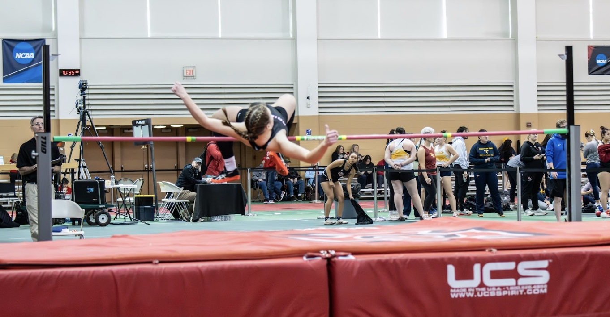

Hi!
I'm Kirsten, a student-athlete at Grinnell College pursuing dual majors in Economics and Political Science, with a growing focus on investment banking and finance recruiting.
As a member of the Grinnell College Track and Field team, I compete in high jump, placing 4th at Midwest Conference championships both indoors and outdoors and ranking #119 nationally in NCAA DIII, while balancing 20+ hours of weekly training with a 3.918 GPA.
This past summer, I interned at JC & SON Capital, a Chicago-based options trading firm, where I built hands-on experience managing simulated options positions and briefing a supervising trader on market conditions. I'm also 1 of 12 students selected for Grinnell's Finance Career Accelerator, preparing for a career in investment banking.
Beyond academics and athletics, I serve as a Community Advisor supporting 15 residents on my floor, research private equity's role in healthcare, and I'm committed to giving back through tutoring and volunteer work.
Email me at kellykir@grinnell.edu!
Class of 2029
Majors: Economics and Political Science
GPA: 3.918/4.00 | Founder's Scholar | Dean's List Honoree
Class of 2025
Researching private equity ownership in Iowa's healthcare sector 5-10 hours weekly, evaluating capital structures, acquisition patterns, and regulatory implications through academic and industry literature. Presented findings to an audience of 100+ faculty and peers via a formal research deck and paper, translating complex financial and regulatory concepts for a non-specialist audience.
I critically evaluate academic research and contemporary policy issues to construct well-supported arguments in competitive debate formats. Through this organization, I mentor newer members and facilitate structured discussions that promote respectful discourse and analytical thinking.
I prepare and deliver persuasive legal arguments while adapting quickly to opposing counsel's strategies during competitive mock trial tournaments. This experience sharpens my public speaking, critical thinking, and improvisational skills under pressure.
Managed simulated options positions daily across a 12-week internship, applying delta, theta, and vega to size trades from no prior background and building a 40+ position paper-trading book. Collaborated with my supervising trader on daily trade rationale across live and paper portfolios, contributing independent trade ideas that supported an 80% win rate on trades I was involved with. Delivered 10 weekly market briefings on earnings releases and geopolitical catalysts, one of which flagged risk that directly informed my supervisor's decision to exit a live position early.
Selected as 1 of 12 students for Grinnell's Finance Career Accelerator, a competitive program preparing fellows for investment banking, private equity, and asset management recruiting. Completed 4 Wall Street Prep certifications in accounting, Excel, corporate finance, and financial-report analysis, building technical proficiency in DCF, LBO, M&A, and comparable company analysis.
Chosen for a national consulting accelerator on a full scholarship, completing 5 mock case interviews over 5-10 hours weekly and applying frameworks for market sizing, profitability, and business strategy. Earned a perfect score on my client-facing pitch deck for a mock case, translating structured problem-solving into a polished business recommendation.
I support the coordination and execution of collegiate athletic events at Grinnell College, assisting with event logistics to ensure smooth and organized competitions. This role has strengthened my ability to work effectively within a team, communicate clearly under time constraints, and contribute to a positive experience for student-athletes and attendees alike.
Contribute equity research and financial-statement analysis supporting portfolio decisions for our $380,000 student-run fund. Apply macroeconomic and Federal Reserve policy analysis to sector allocation, supporting a decision to exit a position based on my recommendation.
Support a floor of 15 upperclassmen students, balancing weekly community-building programming, including a recurring Sunday night tea, with day-to-day support, conflict resolution, and crisis response for residents. Plan and run 2 larger floor events per semester on a $135 budget on top of ongoing weekly programming.
Coached 4-6 athletes in private volleyball lessons over about a year, delivering technique-focused instruction and building customized training plans around each athlete's skill level and goals. Designed drills and progression targeting fundamentals, adapting instruction as each athlete developed.
Rated a 5-star lifeguard on 3 separate audits, reflecting consistent adherence to safety and surveillance standards. Supervised pool safety for a facility serving up to 800 patrons, working roughly 30 hours weekly during peak summer seasons while maintaining active certification in CPR/AED, First Aid, and StarGuard Lifeguard across 3 consecutive summers.
I've spent the past 4 years tutoring students independently, starting with general math support and evolving into a focus on standardized test prep. Tutored 4+ students individually in 1-2 weekly sessions each, building customized study plans and an extensive library of practice materials and progress-tracking systems around each student's target scores and timeline.
Preparing for the Securities Industry Essentials exam, covering basic securities industry knowledge including regulatory structure, products, and industry practices required for entry into the field.
Researched private equity ownership in Iowa's healthcare sector, evaluating capital structures, acquisition patterns, and regulatory implications through academic and industry literature. Presented findings to an audience of 100+ faculty and peers via a formal research deck and written paper.
View Research Paper →Client-facing pitch deck built for a mock case during the Possible Consulting Career Accelerator, translating structured problem-solving into a polished business recommendation. Earned a perfect score from program mentors.
View Slide Deck →Planned discounted cash flow model on a public company, applying Wall Street Prep training to build out revenue projections, WACC assumptions, and a sensitized valuation range.
Planned leveraged buyout model on a mid-cap target, applying WSP corporate finance training to structure a debt schedule, returns analysis, and exit assumptions.
Currently preparing for the Securities Industry Essentials exam, targeting completion late this year.
05/29 Update:
Excited to announce that I have started my summer internship at JC & SON Capital, a Chicago-based options trading firm specializing in derivatives markets. I am building hands-on experience in live options markets, applying strategies including vertical spreads, iron condors, and short strangles while deepening my understanding of the Greeks and premium-selling frameworks. Grateful for the opportunity to bridge classroom finance theory with real-world trading dynamics this summer.
05/02 Update:
Excited to share that I have completed the Possible Consulting Career Accelerator. Over the course of the program, I developed structured problem-solving and case interview skills through mock casing sessions and direct mentorship from consulting professionals, earning a certificate of completion. Grateful for the experience and the incredible cohort I got to learn alongside.
04/15 Update:
Thrilled to share that I have been selected as one of 12 students for Grinnell College's Finance Career Accelerator, a competitive program preparing fellows for careers in investment banking, private equity, and asset management. The program includes hands-on financial modeling training in DCF, LBO, M&A, and comparable company analysis, as well as a New York finance immersion experience. Looking forward to everything ahead.
03/13 Update:
I'm excited to share that I've been accepted into the Possible Consulting Career Cohort on a full-ride scholarship. The program is designed to prepare students for careers in consulting through case interview training, structured problem solving, and mentorship. I'm especially excited that the program has strong connections with Boston Consulting Group (BCG). Looking forward to building new skills and learning from an incredible community of peers and mentors.
I'm also excited to share that I've been selected by Grinnell College to serve as a Community Advisor (CA) for the 2026-2027 academic year. Community Advisors play an important role in supporting residents, fostering inclusive communities, and helping create a positive residential experience on campus. I'm grateful for the opportunity and look forward to contributing to the Grinnell community in this leadership role.
01/10 Update:
I'm excited to share that HB3773, a bill related to a proposal I presented at Illinois Youth and Government in 2024 and later discussed with State Representative Jennifer Gong-Gershowitz, has officially gone into effect as of January 1, 2026. The law updates the Illinois Human Rights Act to regulate the use of artificial intelligence in employment decisions, requiring transparency and prohibiting AI tools that lead to discrimination in hiring, promotion, or other workplace decisions.
It's incredibly meaningful to see an idea discussed through civic engagement programs translate into real public policy. Experiences like Youth and Government continue to reinforce my interest in the intersection of policy, technology, and economic opportunity.

I provided 42 hours per semester of free math tutoring to high school students in subjects ranging from Algebra to Calculus 2. Through individualized instruction and targeted problem-solving approaches, I helped students strengthen their mathematical understanding and academic performance.
I participated in community service, volunteering, and fundraising initiatives including Trick or Treat for UNICEF, Cradles to Crayons, and Feed My Starving Children to support children in need locally and globally. Through this organization, I gained awareness of international conflicts and humanitarian issues while contributing to meaningful service projects that made a tangible impact in the community.
Outside of academics and athletics, I enjoy:
These activities help me maintain balance, develop new skills, and connect with people who share similar passions.
kellykir@grinnell.edu